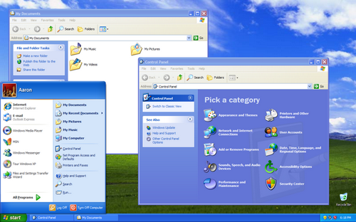

Microsoft Windows (ou simplesmente Windows) é uma família de sistemas operacionais desenvolvidos, comercializados e vendidos pela Microsoft. É constituída por várias famílias de sistemas operacionais, cada qual atendendo a um determinado setor da indústria da computação, sendo que o sistema geralmente é associado com a arquitetura IBM PC compatível. A Microsoft introduziu um ambiente operacional chamado Windows em 20 de novembro de 1985, como um shell para MS-DOS, em resposta ao crescente interesse em interfaces gráficas de usuário (GUIs).
O Microsoft Windows passou a dominar o mercado de computadores pessoais (PC) do mundo, com mais de 90% de participação de mercado, superando o Mac OS, que havia sido introduzido em 1984. A Apple chegou a ver o Windows como uma invasão injusta em sua inovação no desenvolvimento de produtos GUI, como o Lisa e o Macintosh (eventualmente resolvido na Justiça em favor da Microsoft em 1993). Nos PCs, o Windows ainda é o sistema operacional mais popular.
A principal linguagem de programação usada para escrever o código-fonte das várias versões do Windows é o C e algumas partes com C++ e Assembly. Até a versão 3.11, o sistema rodava em 16 bits (apesar de poder instalar um update chamado Win32s para adicionar suporte a programas 32 bits), daí em diante, em 32 bits. As versões a partir do XP e Server 2003 estão preparadas para a tecnologia 64 bits. Os sistemas de 64 bits não possuem mais suporte para rodar nativamente aplicativos de 16 bits, sendo necessário uso de emuladores/máquinas virtuais. Os bits são relacionados ao volume de dados que um microprocessador é capaz de lidar. Se um processador tem uma arquitetura de 64 bits, ele é capaz de lidar com dados na ordem de 264, ou seja, 18446744073709552000. Só que para isso ser possível, é necessário que o sistema operacional seja de 64 bits, caso contrário ele trabalhará com somente com instruções de 32 bits (Se o sistema for de 32 bits). Sistemas operacionais de 64 bits também endereçam uma quantidade maior de RAM, suportando até 192GB (Windows 7 Ultimate) ou 128GB (Windows XP Professional), contra 3,2GB dos sistemas de 32 bits.
Outra característica denominada de herança maldita devido o fato de ter herdado essa regra do DOS é o fato de não se poder criar pastas com os determinado nomes: con, prn, aux, com1 e lpt1. Trata-se de uma antiga herança que os SOs Windows carregam do MS-DOS e são palavras reservadas para a comunicação interna do SO. Portanto, mesmo o mais recente sistema da Microsoft é incapaz de interpretar tais sentenças como simples nomes através do Windows Explorer. Através do Prompt de Comandos é possível criar pastas e arquivos com qualquer um dos nomes acima. Mas o sistema impede que os documentos sejam editados e excluídos pelo Windows Explorer.
A Microsoft começou a desenvolver o Microsoft Windows em setembro de 1981. Os primeiros Windows, como o 1.0 (1985), 2.0 (1987), são compatíveis apenas com partições formatadas em sistema de ficheiros FAT, nesse caso, o FAT 16, servindo de interface gráfica para sistemas MS-DOS. A primeira versão do Windows não foi popular, ela foi apenas uma das muitas interfaces gráficas para o PC que surgiram após o lançamento do Macintosh, da Apple. Uma das principais críticas era que o sistema era “pesado”.

Primeira versão do windows
O 3.x (1990) poderia ser instalado em FAT 32, porém necessita ser instalado o MS-DOS 7.10, que era incluído nos disquetes de inicialização do Windows 95 OSR2 e Windows 98, necessitando modificar alguns arquivos para permitir seu funcionamento.
O Windows 95 foi lançado em 24 de agosto de 1995. Ele era um Windows completamente novo, e de nada lembra os Windows da família 3.xx. O salto do Windows 3.0 ao Windows 95 era muito grande e ocorreu uma mudança radical na forma da apresentação do interface. Introduziu o Menu Iniciar e a Barra de Tarefas. Enquanto Nesta versão, o MS-DOS perdeu parte da sua importância visto que o Windows já consegue ativar-se sem precisar da dependência prévia do MS-DOS. As limitações de memória oferecidas ainda pelo Windows 3.0 foram praticamente eliminadas nesta versão. O sistema multitarefa tornou-se mais eficaz. Utilizava o sistema de ficheiros FAT-16 (VFAT). Os ficheiros (arquivos) puderam a partir de então ter 255 caracteres de nome (mais uma extensão de três caracteres que indica o conteúdo do arquivo, facilitando assim sua identificação e podendo ser associado para abertura em determinados programas). O salto foi enorme, e o lançamento foi amplamente divulgado pela imprensa, inclusive pelas grandes redes de televisão. Existe uma outra versão do Windows 95, lançada no início de 1996, chamada de Windows 95 OEM Service Release 2 (OSR 2), com suporte nativo ao sistema de arquivos FAT32. Já o Windows 95, a partir da revisão OSR 2.1, incluía o suporte nativo ao Barramento Serial Universal (USB) e Ultra DMA (UDMA). Foi lançada ainda uma versão especial, o Windows 95 Plus!, com um pacote de diferentes temas visuais e sonoros para personalização do sistema operacional. Esta versão também incluía o navegador Internet Explorer.

Windows 95
Esta versão foi lançada em 25 de Junho de 1998. Foram corrigidas muitas das falhas do seu antecessor. A maior novidade desta versão era a completa integração do S.O. com a Internet. Utilizava o Internet Explorer 4. Introduziu o sistema de arquivos FAT 32 e começou a introduzir o teletrabalho (só foi possível devido à integração do Web). Melhorou bastante a interface gráfica. Incluiu o suporte a muitos monitores e ao USB (Universal Serial Bus). Mas, por ser maior do que o Windows 95 e possuir mais funções, era também mais lento e mais instável. Nessa versão, nasce a restauração de sistema via MS-DOS (Scanreg.exe /restore). A restauração de sistema visava corrigir problemas retornando o computador a um estado anteriormente acessado (ontem, antes de ontem, etc).

Windows 98
O Windows ME foi o sucessor do Windows 98 SE, e tinha como público-alvo usuários domésticos. Ele vinha com o Internet Explorer 5.5, Windows Media Player 7, e o então novo Windows Movie Maker, que continha o básico de edição de vídeo, tendo sido desenvolvido para fácil uso aos usuários domésticos. A Microsoft também atualizou a interface gráfica, as características da shell, e o Windows Explorer do Windows ME, com algumas das adições que haviam sido introduzidas no Windows 2000, que havia sido lançado para uso profissional sete meses depois. Os softwares do Windows ME poderiam ser atualizados para o Internet Explorer 6 SP1 (não o SP2, ou o Internet Explorer 7, no entanto), Outlook Express 6 SP1, e o Windows Media Player 9. O Microsoft .NET Framework 2.0 - e posteriores - também eram suportados; no entanto, versões 2.0 SP1, 3.x e posteriores não. O Office XP foi a última versão do Microsoft Office compatível com o Windows ME.
Windows ME
O Windows XP foi uma família de sistemas operacionais de 32 e 64 bits produzido pela Microsoft, para uso em computadores pessoais, incluindo computadores residenciais e de escritórios, notebooks, tablets e media centers. O nome "XP" deriva de eXPerience. É o primeiro sistema operacional para consumidores produzido pela Microsoft construído em nova arquitetura e núcleo (Windows NT 5.1). O Windows XP foi lançado no dia 25 de Outubro de 2001 e mais de 400 milhões de cópias estavam em uso em Janeiro de 2006, de acordo com estimativas feitas naquele mês pela empresa de estatísticas IDC. Suas vendas cessaram no dia 30 de Junho de 2008, porém ainda era possível adquirir novas licenças com os desenvolvedores do sistema até 31 de Janeiro de 2009 ou comprando e instalando as edições Ultimate ou Business do Windows Vista e então realizando o downgrade para o Windows XP.Até o final de Julho de 2010, o Windows XP era o sistema operacional mais utilizado no mundo com 62.43% de participação no mercado, tendo chegado a 85% em Dezembro de 2006.
Windows XP
O Windows Vista é a sexta versão do Windows para uso em computadores pessoais, incluindo computadores residenciais e de escritórios, laptops, Tablet PCs e computadores Media Centers. Antes do seu anúncio em 22 de Julho de 2005, o sistema era conhecido pelo nome de código Longhorn. O lançamento dele veio mais de cinco anos depois da introdução do seu predecessor, o Windows XP, sendo o período mais longo entre lançamentos consecutivos de versões do Microsoft Windows. O Vista possui novos recursos e funções dos que os apresentados por sua versão anterior o Windows XP, como uma nova interface gráfica do usuário, apelidada de Windows Aero.

Windows Vista
O Windows 7 é uma série de sistemas operativos produzidos pela Microsoft para uso em computadores pessoais, incluindo computadores domésticos e empresariais, laptops, tablets e PCs de centros de mídia, entre outros. Windows 7 foi lançado para empresas no dia 22 de julho de 2009, e começou a ser vendido livremente para usuários comuns às 00:00 do dia 22 de outubro de 2009, menos de 3 anos depois do lançamento de seu predecessor, Windows Vista. Diferente do Windows Vista, que introduziu um grande número de novas características, Windows 7 foi uma atualização mais modesta e focalizada para ser mais eficiente, limpo e mais prático de usar, com a intenção de torná-lo totalmente compatível com aplicações e hardwares com os quais o Windows Vista já era compatível.

Windows 7
A penúltima versão lançada, o Windows 8.1, é um sistema operacional mais estável, o seu visual é simples e tem uma boa performance em uma grande gama de computadores, tablets e Notebooks Híbridos de variadas configurações. O layout também sofreu algumas modificações, para que seja mais fácil encontrar o que você precisa, quando precisa, permitindo que o usuário ganhe tempo em tarefas rotineiras.
Um dos pontos interessantes desta versão do Windows, é o novo menu Iniciar com o estilo Metro. Ao mover o ponteiro do mouse no canto inferior esquerdo, você pode tanto visualizar os seus arquivos e programas da maneira clássica, como os aplicativos da Windows Store, além da busca mantida do Windows 7. A área de trabalho foi mantida, para acesso aos arquivos como nas versões anteriores, por pastas e menus de navegação intuitivos, permitindo fácil adequação dos usuários ao Windows 8 como um todo. Dentro das melhorias do Windows 8, também é notável que a Microsoft melhorou na velocidade de início e das tarefas básicas como abrir e usar programas.

Windows 8
A Microsoft lançou o Windows 10 Technical Preview (nome de código Threshold) no dia 30 de setembro de 2014 e em seu lançamento foi enfatizado o retorno do Menu Iniciar de que tanto os utilizadores sentiam falta. Quanto ao design, houve muitas alterações quando se compara com a versão anterior (Windows 8.1). A promessa do novo Windows é de unir o melhor de dois mundos que se tornaram distantes (Windows 7, focado em desktops, e Windows 8.1, focado em tablets). Outro recurso apresentado foram as novas Live Tiles, que podem ser inseridas agora, ao lado do Menu Iniciar, e dimensionadas, tal como no Windows 8.1. Além disso, o Windows 10 traz diversos novos recursos e inovações que superam, em quantidade, as apresentadas no Windows Vista. Diversos recursos e funcionalidades foram substituídas/remodeladas ou, simplesmente, deletadas, tornando o sistema mais limpo e fluido. Funcionalidades comuns, como calculadora por exemplo, foram substituídas pelos Aplicativos Universais. Se o usuário ainda não desejar ter o menu iniciar de volta, pode substitui-lo pela Tela Iniciar clicando com o botão direito sobre a barra de ferramentas e, na aba "Menu Iniciar", desabilitar a opção "Usar o Menu Iniciar ao invés da Tela Iniciar". No dia 29 de julho de 2015, a versão final do Windows 10 foi lançada pela Microsoft.

Windows 10